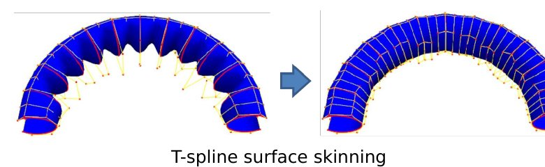
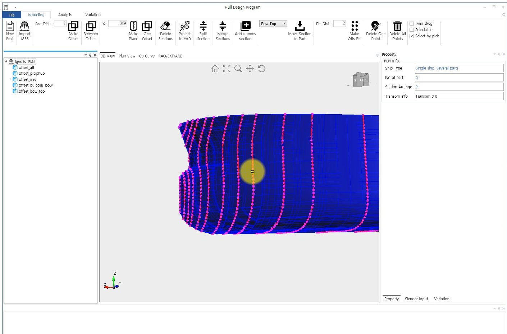
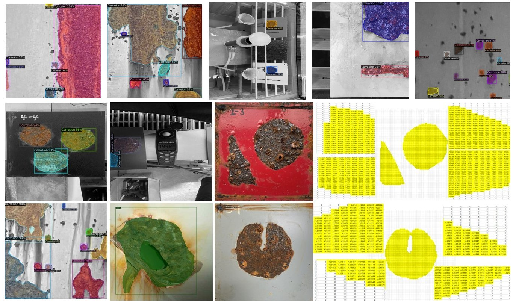
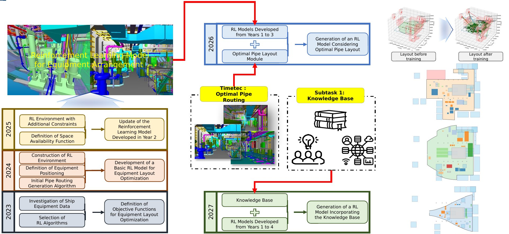

Highlights
Surfaces over curve networks and T-splines
Our foundation is the mathematics of free-form curves and surfaces. We developed methods to build G¹-continuous surfaces over boundary curve networks with T-junctions, and local T-spline surface skinning with shape preservation — the basis for representing complex hull geometry.
- Constructing Bézier surfaces over a boundary curve network with T-junctions (CAD, 2012)
- Local T-spline surface skinning with shape preservation (CAD, 2018)
- Bézier surface interpolation with T-junctions at a 3-valent singular vertex (CAGD, 2018)

Hull form design and optimization process
We apply CAGD to ship hull representation, modification and generation that satisfies design constraints. Our in-house hull design program supports hull form variation, surface generation and offset extraction, and is used with CFD, model tests and sea-trial data in an optimization loop developed with SNU partners and KRISO.
- Study on hull optimization process considering operational efficiency in waves (Processes, 2021)
- Hull form reconstruction from insufficient data conforming to hydrostatic constraints (IJNAOE, 2026)

Direct prismatic coefficient variation
Classic 1−Cp variation keeps section shapes but limits variety; editing sections by hand is slow. We vary Cp directly on the hull surface using free-form deformation and constrained interpolation, and use parametric Cp-curve functions to create hull forms with a parallel middle body intuitively.
- Direct prismatic coefficient variation to hull form surface (IJNAOE, 2024)
- Intuitive hull form variation with a parallel middle body based on Cp curve modification (Ocean Engineering, 2025)
- Entrance and run angle variations preserving the prismatic coefficient (IJNAOE, 2023)

Reinforcement learning for optimal hull forms
An RL agent modifies fore and aft parts of the hull, receives total resistance as reward, and learns variations that reduce resistance while keeping principal particulars. PPO and DDPG agents reduced total resistance by about 2.5% in our case study.
- Reinforcement learning-based optimal hull form design with variations in fore and aft parts (JCDE, 2024)

LLM agents with function calling
An engineering agent turns a designer's request (e.g. “design a 320K VLCC with minimized resistance”) into intent and parameters, retrieves ship data with RAG, calls hull-variation functions in a geometry kernel, and checks performance with a CFD-based surrogate model — closing the loop automatically. This is the core of our NRF project (2026–2030).

Corrosion area detection and depth prediction
CNN-based models detect corroded areas in images and predict corrosion depth by mapping measured specimen thickness to detected regions, supporting inspection and safety diagnosis of marine structures.
- Corrosion area detection and depth prediction using machine learning (IJNAOE, 2024)

Outfitting design automation
With KEIT support, we develop reinforcement-learning models for equipment arrangement and pipe routing combined with a digital knowledge base, to automate ship outfitting design (2023–2027).
